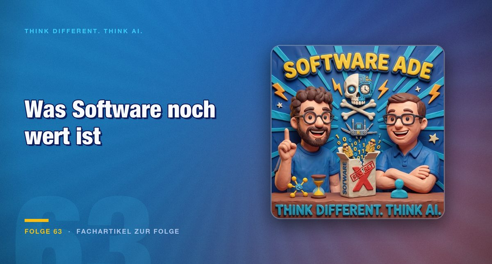

Episode 63 · Feature article on the episode
Reverse engineering with AI: value shifts from the product to the service
When AI rebuilds someone else's software in hours, the finished product loses value. What remains decides licences, contracts and trust in the provider.

A colleague used Opus to build an interactive 3D simulation in the browser in a short time. It shows a cardiovascular system, the erosion of a river valley and how a rocket turbine works, and everything can be changed with rotary controls. For Mark this was the occasion to raise the question that runs through episode 63: what is software still worth when almost everything can be rebuilt?
From user interface to interface
The example in the episode goes a step further. An existing app is rebuilt so that it runs as an MCP server. An AI then speaks directly to the backend, without an interface. After a login, the tool can be integrated into other AI environments.
For the software industry this shifts where the value lies. Until now the interface was the product, which the customer operated. If the interface becomes optional for an AI, the interface remains. The episode summarises it like this:
"A frontend becomes an interface, an interface becomes … I do not know what."
The hosts themselves admit that this end is open. What is certain for them is only that value shifts. Existing customers play a role here. They have an ongoing business relationship that a fresh rebuild does not deliver immediately, and precisely this relationship can be played out well for a while.
The product loses, the service remains
The central idea of the episode is that the digital product itself hardly carries a price any more. It can be copied quickly. In the hosts' view, physical products will eventually follow the same path. What remains is what surrounds it: maintenance, adaptation and support over the years. That costs time and money, and in the hosts' view it belongs to every product development.
"The service around it is what is worth something."
From this the two draw a consequence for licensing models. Companies often buy software for one, two or three years, and these cycles are likely to get shorter. One conceivable model is that the provider no longer sells finished software, but a consulting contract with ongoing adaptation.
According to the episode, the lever lies in introduction. Software often fits a company only 80 or 90 percent. Training, data connections and adapted workflows then tie up a lot of money, and today success managers and consulting teams stand ready for that. A provider could take over this part itself and deliver it as a personalised service. The episode stays with the idea here. It gives no solid figures for it.
Old hardware gets a second software
The episode illustrates the logic with a device from the household. Mark owns a loudspeaker with a glowing ring. Its pseudo-AI voice never convinced him, but the sound quality for its size did. He wants to run the speaker with his own AI variant and connect it to his second brain.
This fits an observation from the project overview that Mark looked through on GitHub. At the top are not clones of well-known office programmes. At the top are projects that reactivate old drivers, renew connections and bring back support for old file formats. That surprises Mark, and it shows where the benefit lies for many people: in devices whose manufacturers no longer deliver updates.
The gap in access remains
The episode does not hide the other side. Anyone who has access to good models, to tokens and to time can use all of this. Anyone without access stays on the outside. The hosts speak of education, opportunities and access to models as the factors that increasingly decide what someone is enabled to do. Their fear: the gap between those who work with it and those who hear nothing of it keeps widening.
The episode sets a calculation against this. An agency quickly charges a five-figure sum for a small app. The tokens for it are in the range of a few euros. That is an estimate from the conversation, not a verified calculation. That is precisely why the direction is worth looking at: the hosts see more a gap that AI can narrow than one it widens.
One caveat remains. Anyone who has the time and the means to work with the tools is privileged. The episode says so explicitly. Even so, the needle is moving towards more possibilities for more people.
Games as the pioneer
The episode's introduction runs through games. Mario in Fortnite, Bubble Bobble with Populous: anyone who extracts characters and mechanics from other people's games creates combinations that nobody had thought of before. The episode leaves open whether this is permissible. It explicitly gives no legal advice and no call to action. It describes what is happening out there right now.
The hosts suspect that the games industry shows new ideas first, and that the classic software industry follows half a year to a year later. That is an assessment, not a measurement. The Gamescom episode described the headwind from players against AI content. According to the episode, the games industry therefore still proceeds cautiously, even though players are now trying out mashups.
Conclusion
The episode does not say that software disappears. Its consequence is narrower. Providers should check whether their offer is more than the finished piece. Anyone who can sell maintenance, adaptation and an ongoing relationship has a value that a fast rebuild does not replace straight away. Anyone buying software should check the contract for how adaptations, updates and the term are regulated. In this situation a three-year licence is a bet on the status quo.
For individuals with a concrete workflow, a small tool that fits exactly their own process has become more realistic. At the same time the episode warns that this path is not open to everyone.